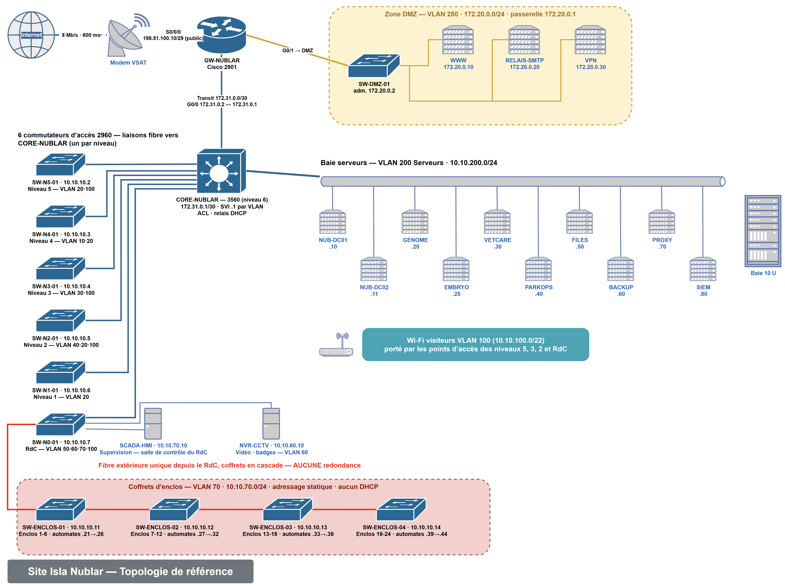

- Pourquoi une maquette de démonstration
- Inventaire et plan de câblage
- CORE-NUBLAR — la configuration pivot
- Les six commutateurs d’accès
- La chaîne des enclos
- GW-NUBLAR et la DMZ
- Les serveurs et leurs services
- Les postes témoins
- Les huit démonstrations à dérouler en classe
- Limites assumées de la simulation
Pourquoi une maquette de démonstration
Montrer d’abord le territoire, faire construire ensuite le plan.

draw.io/03-topologie-isla-nublar.drawio.La séquence recommandée tient en trois temps. Temps 1 : vous ouvrez cette maquette au vidéoprojecteur et déroulez les démonstrations — la classe voit un site qui fonctionne, avec ses flux, ses refus et ses failles. Temps 2 : les étudiants construisent le réseau d’apprentissage en suivant la fiche de montage — et reconnaissent dans leur maquette un morceau de ce qu’ils ont vu vivre. Temps 3 : l’audit du livret (partie 10), dont ils ont déjà observé les symptômes en démonstration sans le savoir.
Cette maquette reproduit le site tel que livré : pas de mots de
passe, VLAN natif par défaut, ACL posées dans un seul sens, journaux qui ne partent
nulle part. C’est ce qui rend les démonstrations D3, D4, D6 et D8 possibles — elles
montrent les constats d’audit avant que les étudiants ne les lisent.
Deux différences documentées avec la maquette étudiante : ici le domaine est
nublar.ingen.corp (le site appartient à la forêt ingen.corp),
et les commutateurs d’accès portent leurs adresses d’administration
10.10.10.2 → .7 — deux écarts qui sont eux-mêmes des points de cours
(livret, parties 3, 5 et 7). Autre écart, de brassage seulement : les niveaux arrivent
sur F0/11 → F0/16 du cœur et GW-NUBLAR sur F0/24
(contre F0/5 et F0/7 en salle), et PC-DSI-01 est au
niveau 4 — pour le TP, la référence reste la partie 7 du livret.
Inventaire et plan de câblage
Treize équipements réseau et vingt-trois extrémités. Posez tout, câblez tout, puis configurez dans l’ordre des sections suivantes.
| Nom | Modèle PT | Rôle | Adresse d’administration |
|---|---|---|---|
| GW-NUBLAR | 2901 | Routeur de sortie + DMZ | 172.31.0.2 · 172.20.0.1 |
| CORE-NUBLAR | 3560-24PS | Cœur — routage inter-VLAN, ACL, relais | .1 de chaque VLAN |
| SW-N5-01 → SW-N0-01 | 6 × 2960-24TT | Accès des niveaux 5 à 0 | N5 = .2 · N4 = .3 · N3 = .4 · N2 = .5 · N1 = .6 · N0 = .7 (10.10.10.x) |
| SW-ENCLOS-01 → 04 | 4 × 2960-24TT | Coffrets d’enclos (variante OT : IE-3400) | 01 = .11 · 02 = .12 · 03 = .13 · 04 = .14 (10.10.10.x) |
| SW-DMZ-01 | 2960-24TT | Segment DMZ | 172.20.0.2 (dans le sous-réseau DMZ) |
| 10 serveurs VLAN 200 | 10 × Server-PT | Voir section 7 | 10.10.200.10 → .80 |
| WWW · RELAIS-SMTP · VPN | 3 × Server-PT | DMZ | 172.20.0.10 · .20 · .30 |
| PC-DIR-N5 · PC-DSI-01 · PC-LAB-N3 · PC-VET-N2 · PC-COM-N1 · PC-CAISSE-N0 | 6 × PC-PT | Postes témoins — F0/2 de chaque commutateur de niveau | DHCP — 10.10.<vlan>.50 |
| NVR-CCTV | PC-PT | Vidéosurveillance — SW-N0-01 F0/3 | 10.10.60.10 /24 · gw .1 (statique) |
| SCADA-HMI | PC-PT | Supervision des enclos — SW-N0-01 F0/4 | 10.10.70.10 /24 · gw .1 (statique) |
| AUTOMATE-E1 · E7 | 2 × PC-PT | Enclos 1 et 7 — SW-ENCLOS-01 F0/2 · SW-ENCLOS-02 F0/2 | 10.10.70.21 · .27 /24 · gw .1 (statiques) |
| De | Interface | Vers | Interface | Câble | Nature du lien |
|---|---|---|---|---|---|
| GW-NUBLAR | G0/0 | CORE-NUBLAR | F0/24 | droit | VLAN 300 — transit /30 |
| GW-NUBLAR | G0/1 | SW-DMZ-01 | F0/1 | droit | DMZ 172.20.0.0/24 |
| CORE-NUBLAR | F0/11 | SW-N5-01 | F0/1 | croisé | trunk 802.1Q |
| CORE-NUBLAR | F0/12 | SW-N4-01 | F0/1 | croisé | trunk |
| CORE-NUBLAR | F0/13 | SW-N3-01 | F0/1 | croisé | trunk |
| CORE-NUBLAR | F0/14 | SW-N2-01 | F0/1 | croisé | trunk |
| CORE-NUBLAR | F0/15 | SW-N1-01 | F0/1 | croisé | trunk |
| CORE-NUBLAR | F0/16 | SW-N0-01 | F0/1 | croisé | trunk |
| SW-N0-01 | G0/1 | SW-ENCLOS-01 | G0/1 | croisé | fibre extérieure — trunk VLAN 10·70 |
| SW-ENCLOS-01 | F0/24 | SW-ENCLOS-02 | F0/1 | croisé | chaîne — trunk |
| SW-ENCLOS-02 | F0/24 | SW-ENCLOS-03 | F0/1 | croisé | chaîne — trunk |
| SW-ENCLOS-03 | F0/24 | SW-ENCLOS-04 | F0/1 | croisé | chaîne — trunk |
Les serveurs du VLAN 200 se branchent en câble droit sur
CORE-NUBLAR F0/1 → F0/10, dans l’ordre des adresses (F0/1 =
NUB-DC01, … F0/10 = SIEM). Les trois serveurs DMZ en droit sur
SW-DMZ-01 F0/2 → F0/4. Les postes témoins : voir
section 8.
C’est une architecture en cœur effondré (collapsed core) : le commutateur de cœur est dans la baie centrale, à cinquante centimètres des serveurs — un commutateur intermédiaire n’apporterait ici ni distance, ni débit, seulement une panne possible de plus. Avec dix serveurs, six trunks et un lien routeur, les 24 ports suffisent. Trois limites à énoncer devant la classe : la maquette câble les dix serveurs physiques du site mais aucune de leurs machines virtuelles, une vraie salle aurait ses commutateurs de baie (top-of-rack) et le cœur ne verrait que des trunks ; les ports du 3560 sont à 100 Mb/s, contrainte du modèle Packet Tracer ; et le cœur cumule routage, filtrage et accès serveurs — un point unique de défaillance de plus, cohérent avec les thèmes du contexte. Le jour où le chantier n° 10 scindera le VLAN 200, l’introduction de commutateurs de baie dédiés en sera la suite naturelle.
Le plan d’interfaces : qui porte quelle adresse
Un port de commutateur ne porte jamais d’adresse IP. Les adresses
vivent à trois endroits seulement : sur les interfaces d’un
routeur (une par réseau raccordé), sur les SVI des
commutateurs (interface Vlan<n> — passerelle si le commutateur route,
simple adresse d’administration sinon), et sur les hôtes (serveurs
et postes). Tout le tableau ci-dessous découle de cette règle.
| Équipement | Interface | Adresse / masque | Rôle de l’adresse | Le trafic du VLAN arrive par |
|---|---|---|---|---|
| GW-NUBLAR | GigabitEthernet0/0 | 172.31.0.2 /30 | Côté routeur du transit | CORE-NUBLAR F0/24 |
| GigabitEthernet0/1 | 172.20.0.1 /24 | Passerelle de la DMZ | SW-DMZ-01 F0/1 | |
| CORE-NUBLAR (ports physiques : aucune IP — une SVI dessert tout son VLAN, pas un port) |
interface Vlan10 | 10.10.10.1 /24 | Passerelle VLAN 10 | les six trunks F0/11 → F0/16 — le VLAN 10 vit sur tous les commutateurs |
| interface Vlan20 | 10.10.20.1 /24 | Passerelle VLAN 20 | trunks F0/11 · F0/12 · F0/15 (niveaux 5, 4 et 1) | |
| interface Vlan30 | 10.10.30.1 /24 | Passerelle VLAN 30 | trunk F0/13 (niveau 3) | |
| interface Vlan40 | 10.10.40.1 /24 | Passerelle VLAN 40 | trunk F0/14 (niveau 2) | |
| interface Vlan50 | 10.10.50.1 /24 | Passerelle VLAN 50 | trunk F0/16 (RdC) | |
| interface Vlan60 | 10.10.60.1 /24 | Passerelle VLAN 60 | trunk F0/16 (RdC) | |
| interface Vlan70 | 10.10.70.1 /24 | Passerelle VLAN 70 | trunk F0/16 (RdC, puis G0/1 vers la chaîne des coffrets) | |
| interface Vlan200 | 10.10.200.1 /24 | Passerelle VLAN 200 | ports d’accès F0/1 → F0/10 (les dix serveurs) | |
| interface Vlan300 | 172.31.0.1 /30 | Côté commutateur du transit | port d’accès F0/24 (GW-NUBLAR) | |
| SW-N5-01 | interface Vlan10 | 10.10.10.2 /24 | Administration — niveau 5 (+ ip default-gateway 10.10.10.1, comme les neuf suivants) | — |
| SW-N4-01 | interface Vlan10 | 10.10.10.3 /24 | Administration — niveau 4 | — |
| SW-N3-01 | interface Vlan10 | 10.10.10.4 /24 | Administration — niveau 3 | — |
| SW-N2-01 | interface Vlan10 | 10.10.10.5 /24 | Administration — niveau 2 | — |
| SW-N1-01 | interface Vlan10 | 10.10.10.6 /24 | Administration — niveau 1 | — |
| SW-N0-01 | interface Vlan10 | 10.10.10.7 /24 | Administration — rez-de-chaussée | — |
| SW-ENCLOS-01 | interface Vlan10 | 10.10.10.11 /24 | Administration — coffret des enclos 1 à 6 | — |
| SW-ENCLOS-02 | interface Vlan10 | 10.10.10.12 /24 | Administration — coffret des enclos 7 à 12 | — |
| SW-ENCLOS-03 | interface Vlan10 | 10.10.10.13 /24 | Administration — coffret des enclos 13 à 18 | — |
| SW-ENCLOS-04 | interface Vlan10 | 10.10.10.14 /24 | Administration — coffret des enclos 19 à 24 | — |
| SW-DMZ-01 | interface Vlan250 | 172.20.0.2 /24 | Administration — dans le sous-réseau DMZ, passerelle 172.20.0.1 | — |
| NUB-DC01 → SIEM | FastEthernet0 | 10.10.200.10 · .11 · .20 · .25 · .30 · .40 · .50 · .60 · .70 · .80 /24 | Hôtes — passerelle 10.10.200.1, DNS 10.10.200.10 | CORE F0/1 → F0/10, dans cet ordre |
| WWW · RELAIS-SMTP · VPN | FastEthernet0 | 172.20.0.10 · .20 · .30 /24 | Hôtes DMZ — passerelle 172.20.0.1 | SW-DMZ-01 F0/2 → F0/4 |
| NVR-CCTV | FastEthernet0 | 10.10.60.10 /24 | Hôte statique — passerelle 10.10.60.1 | SW-N0-01 F0/3 |
| SCADA-HMI | FastEthernet0 | 10.10.70.10 /24 | Hôte statique — passerelle 10.10.70.1 | SW-N0-01 F0/4 |
| AUTOMATE-E1 · E7 | FastEthernet0 | 10.10.70.21 · 10.10.70.27 /24 | Hôtes statiques — passerelle 10.10.70.1 | SW-ENCLOS-01 F0/2 · SW-ENCLOS-02 F0/2 |
| 6 postes témoins | FastEthernet0 | DHCP — 10.10.<vlan>.50 et suivants | Adresse, masque, passerelle et DNS reçus du serveur | voir section 8 |
La convention du livret fait tout le travail : 10.10.<VLAN>.<hôte>,
passerelle toujours en .1, serveurs en .10-.49, DHCP à partir
de .50. Devant une interface inconnue, demandez-vous seulement :
de quel VLAN suis-je la passerelle, l’hôte, ou l’adresse
d’administration ? Les deux seules exceptions sont les
/30 de transit (172.31.0.1 côté cœur, .2 côté
routeur) et la DMZ en 172.20.
Association port → VLAN, commutateur par commutateur
La synthèse complète. Un port access appartient à un VLAN, un trunk à aucun (il les transporte tous, étiquetés), et tout port absent de ces tableaux reste dans le VLAN 1 par défaut — actif et non configuré, comme le veut l’état initial.
| Port | Mode | VLAN | Y est branché |
|---|---|---|---|
| F0/1 → F0/10 | access | 200 | les dix serveurs, dans l’ordre des adresses (F0/1 = NUB-DC01 … F0/10 = SIEM) |
| F0/11 | trunk | — | SW-N5-01 F0/1 |
| F0/12 | trunk | — | SW-N4-01 F0/1 |
| F0/13 | trunk | — | SW-N3-01 F0/1 |
| F0/14 | trunk | — | SW-N2-01 F0/1 |
| F0/15 | trunk | — | SW-N1-01 F0/1 |
| F0/16 | trunk | — | SW-N0-01 F0/1 |
| F0/24 | access | 300 | GW-NUBLAR G0/0 |
| Commutateur | Port | Mode | VLAN | Y est branché |
|---|---|---|---|---|
| SW-N5-01 | F0/2 | access | 20 | PC-DIR-N5 |
| SW-N4-01 | F0/2 | access | 10 | PC-DSI-01 |
| SW-N3-01 | F0/2 | access | 30 | PC-LAB-N3 |
| SW-N2-01 | F0/2 | access | 40 | PC-VET-N2 |
| SW-N1-01 | F0/2 | access | 20 | PC-COM-N1 |
| SW-N0-01 | F0/2 | access | 50 | PC-CAISSE-N0 |
| F0/3 | access | 60 | NVR-CCTV | |
| F0/4 | access | 70 | SCADA-HMI | |
| G0/1 | trunk | — | fibre extérieure → SW-ENCLOS-01 G0/1 |
| Commutateur | Port | Mode | VLAN | Y est branché |
|---|---|---|---|---|
| SW-ENCLOS-01 | G0/1 | trunk | — | SW-N0-01 G0/1 (fibre extérieure) |
| F0/2 | access | 70 | AUTOMATE-E1 | |
| F0/24 | trunk | — | SW-ENCLOS-02 F0/1 | |
| SW-ENCLOS-02 | F0/1 | trunk | — | SW-ENCLOS-01 F0/24 |
| F0/2 | access | 70 | AUTOMATE-E7 | |
| F0/24 | trunk | — | SW-ENCLOS-03 F0/1 | |
| SW-ENCLOS-03 | F0/1 | trunk | — | SW-ENCLOS-02 F0/24 |
| F0/2 | access | 70 | libre (automates 13-18) | |
| F0/24 | trunk | — | SW-ENCLOS-04 F0/1 | |
| SW-ENCLOS-04 | F0/1 | trunk | — | SW-ENCLOS-03 F0/24 — dernier de la chaîne |
| F0/2 | access | 70 | libre (automates 19-24) | |
| SW-DMZ-01 | F0/1 | access | 250 | GW-NUBLAR G0/1 |
| F0/2 → F0/4 | access | 250 | WWW · RELAIS-SMTP · VPN |
Un seul lien la raccroche au bâtiment (SW-N0-01 G0/1), et les coffrets sont
en cascade : coupez le premier lien — clic droit, Delete — et les
vingt-quatre enclos disparaissent de la supervision. C’est le risque R8 de la
matrice, et c’est votre démonstration D8. Ne « corrigez » pas cette
topologie : sa fragilité est un support de cours.
CORE-NUBLAR — la configuration pivot
Neuf VLAN, neuf SVI actives (plus Vlan1 éteinte), six relais DHCP, deux ACL. Quatre blocs à coller.
enable
configure terminal
hostname CORE-NUBLAR
!
vlan 10
name SYS-RESEAUX
vlan 20
name DIRECTION-ADMIN
vlan 30
name HCL-LABO
vlan 40
name VETERINAIRE
vlan 50
name EXPLOITATION-NL
vlan 60
name SECURITE-PHYSIQUE
vlan 70
name SCADA-ENCLOS
vlan 200
name SERVEURS
vlan 300
name TRANSIT
exitinterface range FastEthernet0/1 - 10
switchport mode access
switchport access vlan 200
!
interface range FastEthernet0/11 - 16
switchport trunk encapsulation dot1q
switchport mode trunk
!
interface FastEthernet0/24
switchport mode access
switchport access vlan 300
description Vers GW-NUBLAR G0/0
exitip routing
!
interface Vlan1
no ip address
shutdown
!
interface Vlan10
ip address 10.10.10.1 255.255.255.0
ip helper-address 10.10.200.10
!
interface Vlan20
ip address 10.10.20.1 255.255.255.0
ip helper-address 10.10.200.10
!
interface Vlan30
ip address 10.10.30.1 255.255.255.0
ip helper-address 10.10.200.10
!
interface Vlan40
ip address 10.10.40.1 255.255.255.0
ip helper-address 10.10.200.10
!
interface Vlan50
ip address 10.10.50.1 255.255.255.0
ip helper-address 10.10.200.10
!
interface Vlan60
ip address 10.10.60.1 255.255.255.0
ip helper-address 10.10.200.10
!
interface Vlan70
ip address 10.10.70.1 255.255.255.0
!
interface Vlan200
ip address 10.10.200.1 255.255.255.0
!
interface Vlan300
ip address 172.31.0.1 255.255.255.252
!
exit
ip route 0.0.0.0 0.0.0.0 172.31.0.2access-list 130 remark Entree dans le VLAN 30 : serveurs + retours
access-list 130 permit ip 10.10.200.0 0.0.0.255 10.10.30.0 0.0.0.255
access-list 130 permit tcp any 10.10.30.0 0.0.0.255 established
access-list 130 permit icmp any 10.10.30.0 0.0.0.255 echo-reply
access-list 170 remark Entree dans le VLAN 70 : administration + retours
access-list 170 permit ip 10.10.10.0 0.0.0.255 10.10.70.0 0.0.0.255
access-list 170 permit tcp any 10.10.70.0 0.0.0.255 established
access-list 170 permit icmp any 10.10.70.0 0.0.0.255 echo-reply
!
interface Vlan30
ip access-group 130 out
!
interface Vlan70
ip access-group 170 out
!
end
copy running-config startup-configLe livret (partie 8) ne donne les fichiers de configuration que pour la maquette étudiante — trois équipements. Cette maquette-ci les étend : mêmes ACL, mêmes conventions, relais DHCP sur tous les VLAN d’utilisateurs (10 à 60), aucun sur le 70 (statique) — seule différence voulue, le relais inutile du Vlan200 a disparu : il n’a de raison d’être que comme constat d’audit n° 10, dans la maquette étudiante.
Deux listes étendues, posées en out : chacune examine ce
que le cœur fait entrer dans son VLAN. La liste 170 n’admet dans le
VLAN 70 que les ouvertures d’échange venues du VLAN 10 et les réponses ;
la liste 130 n’admet dans le VLAN 30 que le VLAN 200 et les réponses —
le VLAN 10 en est exclu, c’est l’anomalie voulue du constat n° 9. Ce
que les automates émettent ne croise aucune liste : c’est le constat
n° 1, que D4 montre. Le mécanisme complet, à reprendre devant la classe, est dans le
livret, partie 7. Les VLAN 30 et 70 doivent avoir été créés au bloc 1 :
aucun port d’accès du cœur ne les porte, et sans cette création explicite
Vlan30 et Vlan70 resteraient inactives.
Le fichier isla-nublar.pkt est la maquette fonctionnelle qui illustre la
configuration existante (réseau d’apprentissage, partie 8 du livret) ; il
ne doit donc jamais s’écarter des configurations de référence. Il a été monté avec
les anciennes listes standard :
il est à mettre à jour avec la configuration du bloc 4 (listes 130 et 170).
Retirez les anciennes listes et leurs ip access-group, collez le bloc 4,
puis vérifiez en mode Simulation, avant la séance, T5 et T7 de la fiche de montage, et
D2 et D4 de cette fiche. Packet Tracer accepte established et les types
ICMP (echo-reply) dans les listes étendues numérotées : c’est
à confirmer en mode Simulation lors du recâblage du .pkt. Contrôlez au
passage que T2 obtient toujours son bail : l’offre DHCP est émise par le relais
lui-même, et une liste posée en out ne filtre pas le trafic que
l’équipement génère.
Les six commutateurs d’accès
Une configuration modèle, six variations. Collez le modèle, adaptez trois valeurs.
enable
configure terminal
hostname SW-N5-01
!
vlan 10
name SYS-RESEAUX
vlan 20
name DIRECTION-ADMIN
!
interface FastEthernet0/1
switchport mode trunk
description Uplink vers CORE-NUBLAR
!
interface FastEthernet0/2
switchport mode access
switchport access vlan 20
description Poste temoin du niveau
!
interface Vlan10
ip address 10.10.10.2 255.255.255.0
no shutdown
!
ip default-gateway 10.10.10.1
!
end
copy running-config startup-config| Commutateur | VLAN à créer | F0/2 — accès | Autres ports d’accès | SVI Vlan10 |
|---|---|---|---|---|
| SW-N5-01 | 10 · 20 | vlan 20 | — | 10.10.10.2 |
| SW-N4-01 | 10 · 20 | vlan 10 (PC-DSI-01) | — | 10.10.10.3 |
| SW-N3-01 | 10 · 30 | vlan 30 (PC-LAB-N3) | — | 10.10.10.4 |
| SW-N2-01 | 10 · 40 | vlan 40 (PC-VET-N2) | — | 10.10.10.5 |
| SW-N1-01 | 10 · 20 | vlan 20 (PC-COM-N1) | — | 10.10.10.6 |
| SW-N0-01 | 10 · 50 · 60 · 70 | vlan 50 (PC-CAISSE-N0) | F0/3 vlan 60 (NVR-CCTV) · F0/4 vlan 70 (SCADA-HMI) · G0/1 trunk (enclos) | 10.10.10.7 |
interface Vlan10 + ip default-gateway : chaque commutateur
d’accès reçoit ici son adresse d’administration — c’est ce qui permet
le ping 10.10.10.4 depuis PC-DSI-01, et la démonstration
« voilà pourquoi un commutateur sans adresse est inadministrable à distance »
par contraste avec la maquette étudiante. Sur SW-N0-01, n’oubliez pas
switchport mode trunk sur G0/1 : c’est la fibre
extérieure vers les enclos.
La chaîne des enclos
Quatre coffrets en cascade sur une seule fibre. Même modèle, quatre adresses.
enable
configure terminal
hostname SW-ENCLOS-01
!
vlan 10
name SYS-RESEAUX
vlan 70
name SCADA-ENCLOS
!
interface GigabitEthernet0/1
switchport mode trunk
description Fibre exterieure - ou coffret precedent
!
interface FastEthernet0/24
switchport mode trunk
description Vers coffret suivant
!
interface FastEthernet0/2
switchport mode access
switchport access vlan 70
description Automate d'enclos
!
interface Vlan10
ip address 10.10.10.11 255.255.255.0
no shutdown
!
ip default-gateway 10.10.10.1
end
copy running-config startup-config
Particularités : SW-ENCLOS-02 à 04 reçoivent leur uplink
sur F0/1 (pas G0/1 — la cascade est en cuivre) et
SW-ENCLOS-04, dernier de la chaîne, n’a pas de F0/24
configuré. Deux automates témoins suffisent pour toutes les démonstrations :
AUTOMATE-E1 sur SW-ENCLOS-01 F0/2 (10.10.70.21) et
AUTOMATE-E7 sur SW-ENCLOS-02 F0/2 (10.10.70.27) —
la convention .20 + n° d’enclos en action.
Remplacez les 2960 des coffrets par des IE-3400 (catégorie
Industrial) et les automates par de vrais PLC avec une logique à
contacts minimale (une entrée « commande », une sortie
« clôture ») : la démonstration D5 gagne énormément — on voit la
clôture s’ouvrir. Contrepartie : le fichier ne s’ouvrira qu’en
9.x, et la configuration des PLC sort du référentiel SISR — dosez selon votre classe.
GW-NUBLAR et la DMZ
Deux interfaces actives, deux routes de retour — et un segment DMZ à plat. Répondez no au dialogue de configuration initiale avant de coller.
enable
configure terminal
hostname GW-NUBLAR
!
interface GigabitEthernet0/0
ip address 172.31.0.2 255.255.255.252
description Transit vers CORE-NUBLAR
no shutdown
!
interface GigabitEthernet0/1
ip address 172.20.0.1 255.255.255.0
description DMZ
no shutdown
!
ip route 10.10.200.0 255.255.255.0 172.31.0.1
ip route 10.10.10.0 255.255.255.0 172.31.0.1
!
line vty 0 4
login
transport input all
!
end
copy running-config startup-configenable
configure terminal
hostname SW-DMZ-01
!
vlan 250
name DMZ
!
interface range FastEthernet0/1 - 4
switchport mode access
switchport access vlan 250
!
interface Vlan1
no ip address
shutdown
!
interface Vlan250
ip address 172.20.0.2 255.255.255.0
no shutdown
!
ip default-gateway 172.20.0.1
!
end
copy running-config startup-config
Le réflexe « série des équipements réseau » donnerait 10.10.10.15 —
mais une adresse du VLAN 10 suppose d’être dans le VLAN 10, et celui-ci ne
traverse pas GW-NUBLAR : elle serait injoignable. L’adresse
d’administration d’un équipement vit forcément dans un sous-réseau qui
l’atteint : ici, la DMZ elle-même. Depuis PC-DSI-01,
ping 172.20.0.2 répond — le routeur fait le chemin dans les deux sens.
Reste la vraie question de sécurité, à poser à la classe : administrer un
équipement de DMZ depuis le segment exposé est-il une bonne idée ? En
production, la réponse est un réseau d’administration dédié, hors bande — un
prolongement naturel du chantier de cloisonnement.
Comme dans la maquette étudiante, GW-NUBLAR ne connaît le chemin de retour
que vers les VLAN 200 et 10. Conséquence démontrable
en classe : le navigateur de PC-DSI-01 (VLAN 10) affiche le site
de la DMZ, celui de PC-DIR-N5 (VLAN 20) n’y arrive jamais — les
paquets partent, les réponses meurent sur la table de routage. Dans le site réel, ces
VLAN passent par PROXY ; Packet Tracer ne simulant pas de
mandataire, cette impasse est la démonstration (voir D7 et les
limites).
Les serveurs et leurs services
Treize Server-PT. Chacun reçoit son adresse (passerelle 10.10.200.1, DNS
10.10.200.10 — sauf DMZ : passerelle 172.20.0.1) et
un seul service activé, qui matérialise son rôle.
| Serveur | Adresse | Service PT à activer | Contenu à mettre en scène |
|---|---|---|---|
| NUB-DC01 | 10.10.200.10 | DHCP + DNS | 6 pools (table ci-dessous) · zone nublar.ingen.corp |
| NUB-DC02 | 10.10.200.11 | aucun | Figurant — la réplication AD n’existe pas dans PT, dites-le |
| GENOME | 10.10.200.20 | HTTP | Page d’accueil éditée : « GENOME — accès restreint · données classifiées rouge » |
| EMBRYO | 10.10.200.25 | HTTP | « Registre embryonnaire — chaîne du froid » |
| VETCARE | 10.10.200.30 | HTTP | « Dossiers vétérinaires » |
| PARKOPS | 10.10.200.40 | HTTP | « Billetterie — Nublar Leisure S.A. » (l’autre entité juridique !) |
| FILES | 10.10.200.50 | FTP | Compte de démonstration, un fichier déposé |
| BACKUP | 10.10.200.60 | FTP | « dépôt de sauvegarde » |
| PROXY | 10.10.200.70 | aucun | Figurant — PT ne simule pas de mandataire (limite assumée) |
| SIEM | 10.10.200.80 | SYSLOG | Le tableau reste vide à l’état initial — c’est la démonstration D6 |
| WWW | 172.20.0.10 | HTTP | Site public du parc |
| RELAIS-SMTP | 172.20.0.20 | Domaine de démonstration, deux boîtes | |
| VPN | 172.20.0.30 | aucun | Figurant — la terminaison VPN se traite au projet dédié |
| Pool Name | Default Gateway | DNS Server | Starting IP | Mask | Max Users |
|---|---|---|---|---|---|
| VLAN10-SYSRES | 10.10.10.1 | 10.10.200.10 | 10.10.10.50 | 255.255.255.0 | 150 |
| VLAN20-DIRECTION | 10.10.20.1 | 10.10.200.10 | 10.10.20.50 | 255.255.255.0 | 150 |
| VLAN30-LABO | 10.10.30.1 | 10.10.200.10 | 10.10.30.50 | 255.255.255.0 | 150 |
| VLAN40-VETO | 10.10.40.1 | 10.10.200.10 | 10.10.40.50 | 255.255.255.0 | 150 |
| VLAN50-EXPLOITATION | 10.10.50.1 | 10.10.200.10 | 10.10.50.50 | 255.255.255.0 | 150 |
| VLAN60-SECURITE | 10.10.60.1 | 10.10.200.10 | 10.10.60.50 | 255.255.255.0 | 150 |
| Name | Address | Name | Address |
|---|---|---|---|
| nub-dc01.nublar.ingen.corp | 10.10.200.10 | files.nublar.ingen.corp | 10.10.200.50 |
| nub-dc02.nublar.ingen.corp | 10.10.200.11 | backup.nublar.ingen.corp | 10.10.200.60 |
| genome.nublar.ingen.corp | 10.10.200.20 | proxy.nublar.ingen.corp | 10.10.200.70 |
| embryo.nublar.ingen.corp | 10.10.200.25 | siem.nublar.ingen.corp | 10.10.200.80 |
| vetcare.nublar.ingen.corp | 10.10.200.30 | core.nublar.ingen.corp | 10.10.10.1 |
| parkops.nublar.ingen.corp | 10.10.200.40 | gw.nublar.ingen.corp | 172.31.0.2 |
Prenez cinq minutes pour éditer les pages HTTP (Services → HTTP → index.html, bouton edit) : quand la classe voit s’afficher « GENOME — données classifiées rouge » dans le navigateur d’une caisse de la billetterie, l’absence de frontière entre les deux entités cesse d’être abstraite. C’est la mise en scène qui fait passer D3.
Les postes témoins
Un représentant par VLAN d’utilisateurs — le minimum qui permette de tout démontrer.
| Poste | Sur | Port | VLAN | Adressage |
|---|---|---|---|---|
| PC-DIR-N5 | SW-N5-01 | F0/2 | 20 | DHCP |
| PC-DSI-01 | SW-N4-01 | F0/2 | 10 | DHCP |
| PC-LAB-N3 | SW-N3-01 | F0/2 | 30 | DHCP |
| PC-VET-N2 | SW-N2-01 | F0/2 | 40 | DHCP |
| PC-COM-N1 | SW-N1-01 | F0/2 | 20 | DHCP — même pool que PC-DIR-N5 : .50 ou .51 selon l’ordre des demandes |
| PC-CAISSE-N0 | SW-N0-01 | F0/2 | 50 | DHCP — poste de Nublar Leisure S.A. |
| NVR-CCTV | SW-N0-01 | F0/3 | 60 | statique 10.10.60.10 /24 · gw .1 |
| SCADA-HMI | SW-N0-01 | F0/4 | 70 | statique 10.10.70.10 /24 · gw .1 |
| AUTOMATE-E1 | SW-ENCLOS-01 | F0/2 | 70 | statique 10.10.70.21 /24 · gw .1 |
| AUTOMATE-E7 | SW-ENCLOS-02 | F0/2 | 70 | statique 10.10.70.27 /24 · gw .1 |
Les huit démonstrations à dérouler en classe
Chacune dure trois à cinq minutes, se rejoue à volonté, et renvoie à une partie précise du livret. L’ordre est pensé : du fonctionnement normal vers les failles.
| N° | Ce que vous montrez | Manipulation | Renvoi livret | Montrée |
|---|---|---|---|---|
| D1 | Le voyage d’une requête DHCP | Mode Simulation, filtre DHCP. Sur PC-VET-N2 :
ipconfig /renew. La classe suit la diffusion jusqu’à la SVI,
la conversion par le relais, l’aller-retour vers NUB-DC01 —
et le choix du pool par la passerelle. |
partie 7 — relais DHCP | |
| D2 | Le cloisonnement qui fonctionne | PC-LAB-N3 : ping 10.10.70.10 → échec.
PC-DSI-01 : même ping → succès. Puis sur CORE :
show access-lists — le compteur de la ligne
permit ip 10.10.10.0 … de la liste 170 a bougé pour le ping
réussi ; le refus, lui, ne se compte pas (refus implicite, sans compteur —
pour le voir, il faudrait écrire deny ip any any log en fin de liste).
L’ACL se voit. |
partie 7 — politique de flux | |
| D3 | La caisse qui voit le génome | Navigateur de PC-CAISSE-N0 (poste de la filiale) :
http://genome.nublar.ingen.corp → la page « accès
restreint » s’affiche. Silence dans la salle. C’est le risque
R6 dans sa première étape : la caisse traverse le cœur (VLAN 50 → 200)
sans rencontrer aucun filtre. Le constat n° 11 est l’étape suivante :
une fois PARKOPS compromis, l’attaquant est sur le même segment
que GENOME, en couche 2 (même VLAN). |
parties 4 et 10 — absence de filtrage entre entités, VLAN partagé | |
| D4 | L’automate qui sort librement | AUTOMATE-E1 : ping 10.10.200.20 → succès :
rien n’a filtré l’aller, et la liste 170 laisse revenir la
réponse (ligne echo-reply, dont le compteur bouge). Vers
PC-DSI-01 (ping 10.10.10.50) : succès aussi, mais la
réponse entre cette fois par la ligne permit ip 10.10.10.0 …, la
première qui correspond. La politique (règle 3) dit que les automates
« n’initient eux-mêmes aucun flux » ; la configuration ne
filtre que ce qui entre dans le VLAN. Constat n° 1, risque R3. |
partie 10 — constat 1 · schéma 08 | |
| D5 | La supervision des enclos | SCADA-HMI ping les deux automates → succès. Variante OT : on
actionne la sortie du PLC et la « clôture » change d’état à
l’écran. |
partie 3 — systèmes industriels | |
| D6 | Le SIEM qui n’entend rien | Ouvrez SIEM → Services → SYSLOG : table vide,
alors que le réseau vit depuis vingt minutes. Teaser du chantier 3 : tapez
logging 10.10.200.80 sur CORE, faites un
shutdown / no shutdown sur un port — la ligne apparaît en direct.
Puis no logging 10.10.200.80 pour revenir à l’état initial. |
partie 10 — constat 4 · Nedry | |
| D7 | La route de retour absente | Navigateur de PC-DSI-01 → http://172.20.0.10 :
le site public s’affiche. Même URL depuis PC-DIR-N5 :
rien, jamais. show ip route sur GW-NUBLAR explique tout — deux
routes de retour, pas une de plus. |
partie 7 — les trois pièges de la matrice | |
| D8 | La pelleteuse | Supprimez le lien SW-N0-01 G0/1 ↔ SW-ENCLOS-01. Depuis
SCADA-HMI : plus aucun automate ne répond — les vingt-quatre
enclos sont aveugles. Rebranchez, et chronométrez le retour : une trentaine de secondes de
spanning-tree, faute de tout chemin de secours.
Risque R8 — celui qu’aucun chantier ne couvre : à vos étudiants de
l’écrire. |
partie 3 — matrice, exercice R8 |
Démonstrations montrées 0/8 Cochées sur ce poste, d’une séance à l’autre.
D1, D2, D5 et D7 montrent un réseau qui fait ce qu’on lui a dit. D3, D4, D6 et D8 montrent l’écart entre ce qu’on lui a dit et ce qu’on croyait lui avoir dit. Toute la partie 10 du livret tient dans cette différence — et vos étudiants l’auront vue avant de la lire.
Limites assumées
Ce que cette maquette ne simule pas — à dire aux étudiants plutôt qu’à laisser deviner.
- Active Directory, Hyper-V, la réplication —
NUB-DC02,PROXYetVPNsont des figurants : Packet Tracer ne simule ni annuaire, ni virtualisation, ni mandataire, ni tunnel d’accès distant digne de ce nom. Ces rôles se travaillent sur les VM du réseau réel. - L’administration de SW-DMZ-01 est in-band — son adresse
(
172.20.0.2) vit dans le segment même qu’il commute, faute de réseau d’administration dédié dans la maquette. C’est fonctionnel et c’est critiquable : la question « comment administre-t-on proprement un équipement de DMZ ? » (réponse cible : hors bande) est posée en section 6. - Le VLAN 100 et la liaison satellite — absents, comme de la maquette étudiante : ce sont les projets Wi-Fi et sortie Internet.
- Les volumes — deux automates au lieu de vingt-quatre, un poste par VLAN au lieu de trois cent cinquante : la maquette démontre les mécanismes, pas la charge.
Sauvegardez sous INGEN-Nublar-SiteComplet.pkt — et gardez une copie
intacte : après une séance de démonstrations, la maquette a toujours bougé.